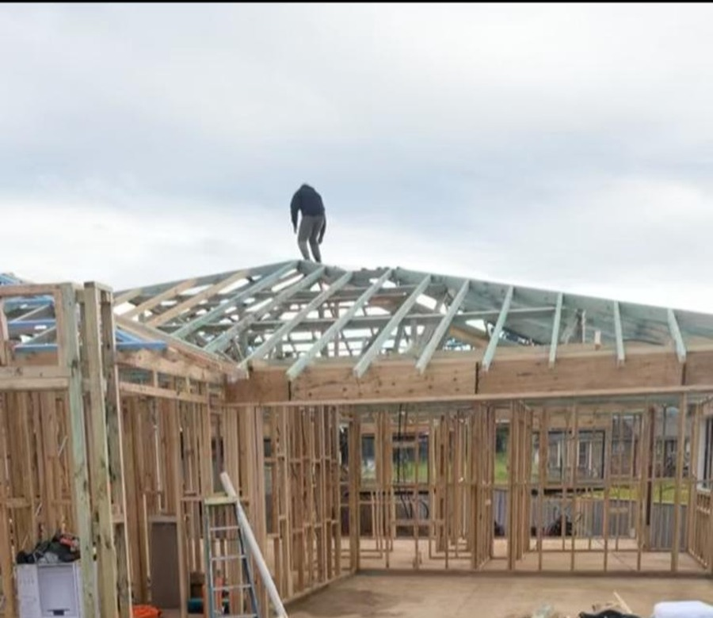
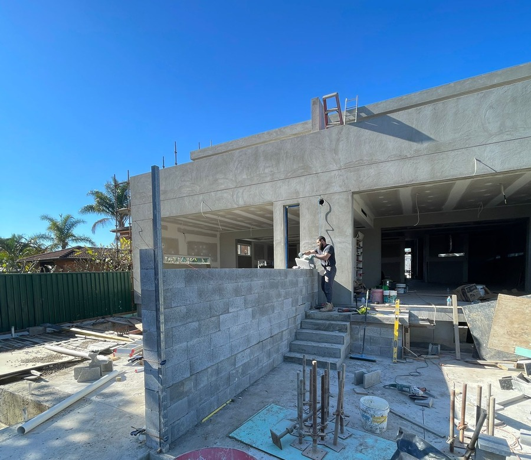

A building company founded on the belief that the best outcomes come from people who genuinely understand construction.
Stud and Beam Constructions was built from the ground up. Founded by Jibril El-Ahmad, a qualified carpenter and builder with years of hands-on experience, the company was born out of a belief that better outcomes come from people who genuinely understand construction at every level.
The premise is simple: when you understand the work from the inside, you make better decisions at every stage of a project. You spot problems before they become defects. You communicate more honestly with clients, engineers, and subcontractors. You take pride in the finished product because you know exactly what went into it.
Today, Stud and Beam operates across four core streams: residential construction, remedial works, commercial fit-outs, and investigations & diagnostics, delivering projects for private clients, developers, and strata managers across NSW.
We're not trying to be the biggest contractor in the market. We're focused on being the most reliable, for the clients we work with.


Early days as a carpenter.
We tell you what the project actually involves, including the parts that are inconvenient. No scope creep surprises.
If something outside the original scope needs attention, we say so, even when it's not our job to fix it.
Safe, tidy, and considerate, whether it's a strata building with residents or a live commercial tenancy.
We don't disappear once the job is done. If something needs attention, we come back.